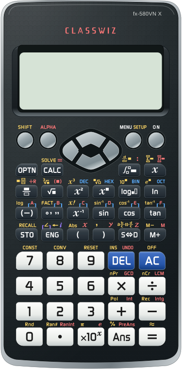

fx-580VN X · Giả lập thử nghiệm
Đang chuẩn bị dùng ngoại tuyến…
KHÔNG GIAN CỦA BẠN
Cùng một chiếc máy.Màu sắc bạn yêu thích.
Chạm để đặt con trỏ. Kéo một ngón để di chuyển con trỏ; trong menu, vuốt lên/xuống để chuyển trang. Hai ngón để cuộn biểu thức dài hoặc phóng to bằng trình duyệt.
Bàn phím máy tính luôn dùng được, kể cả khi tắt cảm ứng LCD.
Cài đặt được giữ trên thiết bị này.
LÀM QUEN TRONG MỘT PHÚT
Bấm MENU, rồi chọn số của chế độ cần dùng. Dùng các phím mũi tên để di chuyển.
Bấm = để tính. DEL xóa một ký tự; AC xóa phép tính hoặc trở về màn nhập.
SHIFT gọi chức năng màu vàng; ALPHA gọi chức năng màu đỏ.
Hằng số khoa học: CODATA 2022 (NIST). Một số giá trị cập nhật khác fx-580VN X; thứ tự phím và menu được giữ nguyên.
Đây là bản thử nghiệm. Nếu gặp lỗi, mở ⋯ → Gửi góp ý và ảnh, kèm chuỗi phím đã bấm.
Kéo thanh cuộn để xem khi phóng lớn. Đóng cửa sổ này để tiếp tục nhập bằng phím máy tính.
LUÔN SẴN TRONG THIẾT BỊ
Mở từ một biểu tượng. Tính toán cả khi mất mạng.
Máy tính đã được cài hoặc đang mở từ biểu tượng ứng dụng. Có thể xem hướng dẫn cho thiết bị khác bên dưới.
Sao chép đường dẫn trang này và mở trong Safari. Không cài từ trình duyệt bên trong Zalo hay Facebook.
Bấm biểu tượng Chia sẻ, rồi chọn Thêm vào Màn hình chính. Có thể cần mở nút ⋯ hoặc cuộn danh sách để thấy mục này.
Bật Mở dưới dạng ứng dụng web nếu có, rồi bấm Thêm. Trở về màn hình chính và mở biểu tượng 580VN X.
Mở đường dẫn máy tính trong Chrome. Sau đó bấm nút ⋮ cạnh thanh địa chỉ.
Chọn Cài đặt và tạo lối tắt → Cài đặt. Một số phiên bản ghi Thêm vào màn hình chính.
Làm theo cửa sổ xác nhận. Sau đó mở 580VN X từ màn hình chính hoặc danh sách ứng dụng.
Dùng được trên Windows và macOS. Giữ kết nối mạng trong lần mở đầu tiên.
Bấm nút bên dưới và xác nhận khi trình duyệt hỏi. Nếu chưa hiện cửa sổ, dùng mục cài ứng dụng trong menu trình duyệt.
Mở biểu tượng 580VN X. Máy tính chạy trong cửa sổ riêng; dùng bàn phím PC để nhập số và phép tính.
Trong Safari, chọn Tệp → Thêm vào Dock, rồi xác nhận Thêm (macOS Sonoma trở lên).
Hình minh họa thao tác; vị trí và tên nút có thể khác theo phiên bản trình duyệt.
Mở từ biểu tượng vừa cài khi còn mạng. Chờ thông báo sẵn sàng bên dưới, rồi tắt mạng và thử 7 × 8 = 56.
Đang kiểm tra dữ liệu ngoại tuyến…
Gửi góp ý và ảnh vẫn cần mạng. Nếu thiết bị đã xóa dữ liệu ứng dụng, hãy mở lại khi có mạng để tải đủ chương trình.
Dùng hàng số hoặc bàn phím số bên phải (bật Num Lock). Các phím tương ứng trên máy tính sẽ sáng khi bấm.
Shift trên bàn phím PC dùng để gõ các dấu như +, * và ngoặc; bấm F1 để dùng SHIFT của máy tính. Khi mở góp ý hoặc cửa sổ tiện ích, phím tắt tính toán tạm ngừng.
Bạn gặp kết quả chưa đúng hoặc thao tác chưa thuận tiện? Hãy ghi lại để chúng tôi có thể kiểm tra và sửa chính xác.
Để trống ô này
Góp ý và ảnh được gửi tới nhóm phụ trách dự án. Chỉ đính kèm phần kiểm tra máy tính; tránh thông tin cá nhân trong ảnh.